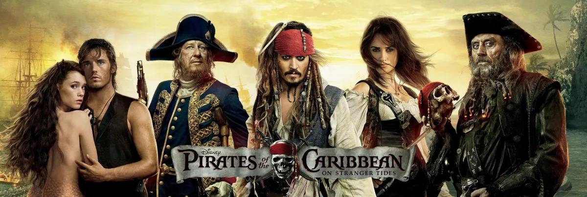

ფილმის სიუჟეტი: ამჯერად კაპიტანი ჯეკ "ბეღურა" ძველ ნაცნობ ქალბატონს ხვდება და არკვევს ეს ნამდვილი სიყვარულია თუ სასტიკ აფერისტთან აქვს საქმე, რომელიც მას იყენებს უკვდავების წყაროს მოსაძებნად. იგი აიძულებს "ბეღურას" გაემგზავროს გემით სახელად ”დედოფალი ანას შურისძიება”, რომელსაც საშინელი ბოროტმოქმედი ”შავწვერa” მართავს. კაპიტანმა ჯეკმა აღარ იცის ვისი უფრო ეშინოდეს, საშინელი ბოროტმოქმედის, თუ მისი ძველი მეგობრის...